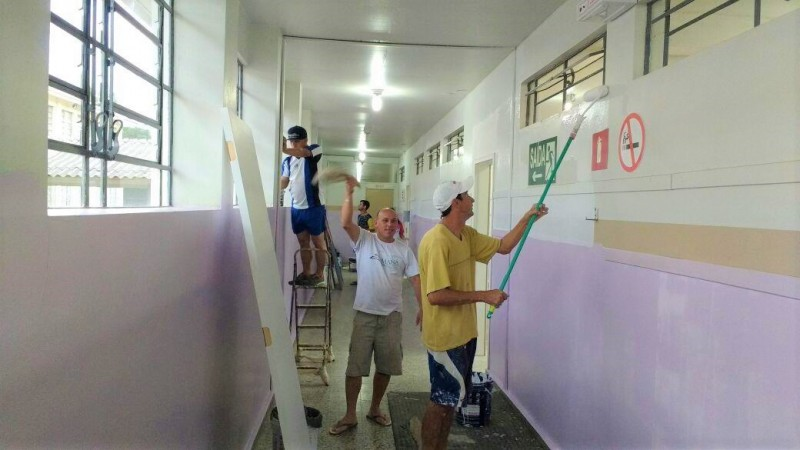

Arrecadar produtos recicláveis que serão convertidos em recursos financeiros para a
compra de materiais didáticos e reforma em escolas que estão localizada em cidades do Rio de Janeiro,
com Índice de Desenvolvimento da Educação Paulista (IDEP) abaixo de 5,8 para o ensino fundamental.